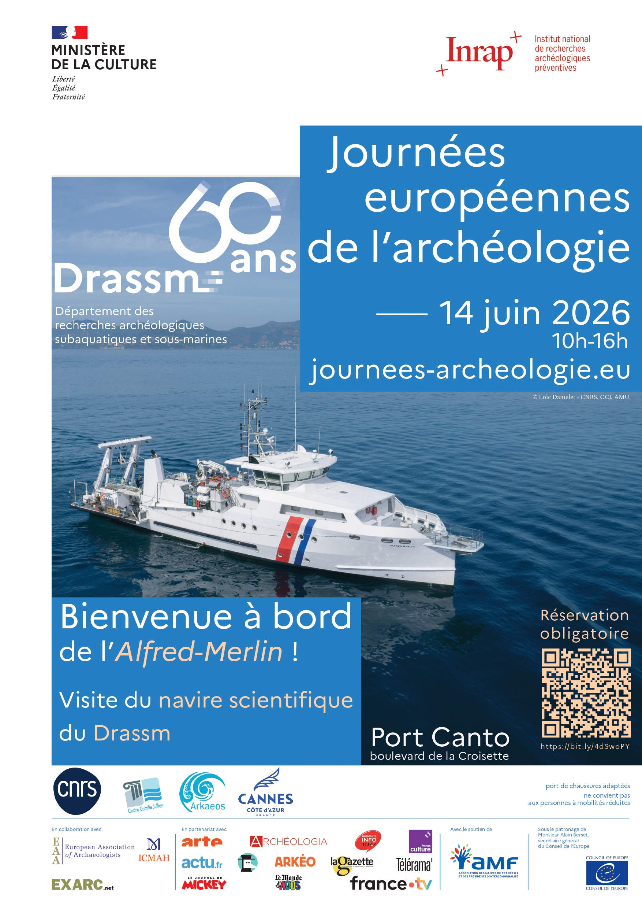
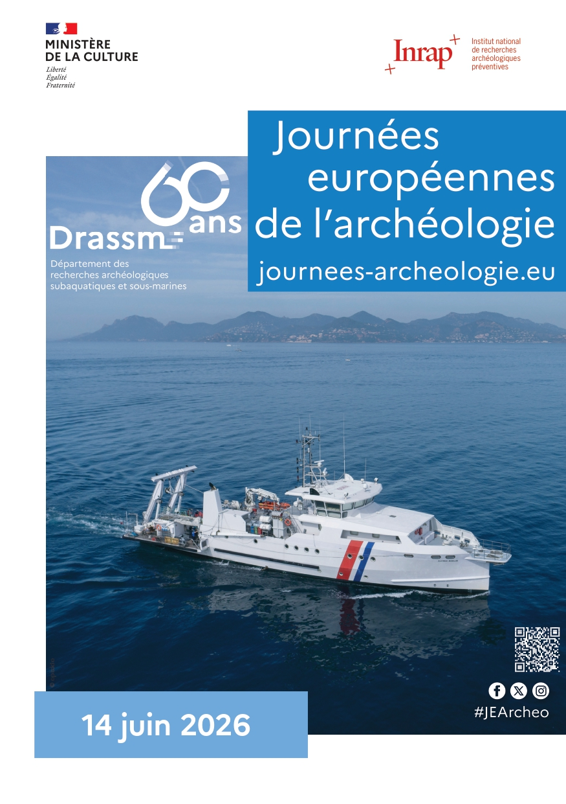

DRASSM — Ministère de la Culture
Journées Européennes de
Journées Européennes de
l'Archéologie
Identité visuelle déployée pour l'édition cannoise des JEA : conception d'une affiche manifeste et d'un flyer pédagogique distribué aux scolaires et au grand public.

Affiche manifeste
JEA_2026-Cannes_V4.jpg

Flyer A5
JEA_flyer_recto.jpg